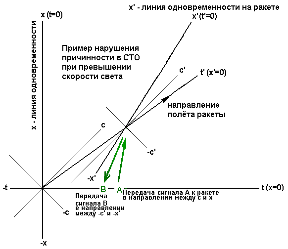

Пример нарушения причинности в специальной теории относительности при превышении скорости света

На рисунке линией t' показана траектория полёта ракеты. В соответствии с преобразованиями Лоренца x' = (x - vt)/β, t' = (t - vx)/β координатные линии инерциальной системы ракеты выглядят как x' (t - vx = 0) и t' (x - vt = 0) . При этом световой конус с...-c и световой конус c'...- c' направлены одинаково.
В момент t A из точки x=0 со сверхсветовой скоростью отправляется сигнал к ракете. Мировая линия этого сигнала направлена в сектор x...x' (часть сверхсветового сектора x...c). На ракете этот сигнал принимают из сектора -x'...+t' (из будущего). Это уже нарушает причинность. Однако на ракете могут не знать откуда пришёл сигнал, так как их приёмник принимает данные, и не может определить траекторию этих данных.
Сигнал сразу же отправляется назад в сектор -x'...A (часть сверхсветового сектора -x'...-c'). Можно использовать специальный передатчик или просто специальное зеркало, способное отражать сверхсветовой сигнал. Для ракеты направление -x'...-c' хотя и сверхсветовое, но это направление в будущее (направление увеличения t' ), без нарушения причинности.
В точке x=0 неподвижной системы отсчёта в момент t B принимается сигнал из будущего, так как он движется из сектора +x...+t в направлении убывания t .
В момент t B я вижу в зеркале себя, каким я буду в будущем в момент t A . В другой интерпретации это называется Парадокс дедушки . Если бы в качестве сигнала использовалась сверхсветовая пуля, то пуля попадет в меня в момент B до того, как я выстрелил в момент A .
Парадокс заключается не в том, что наблюдателю в какой-то системе отсчета кажется, что события проходят в неправильном порядке. Нарушение причинности происходит там где находится наблюдатель. Всё время от отправления сигнала до его получения я был (буду?) в точке x=0 неподвижной системы отсчёта.
Интервал t A - t B становится максимальным, если передавать сигналы мгновенно - вдоль линии одновременности. Тогда Сигнал A будет направлен вдоль оси x (t=const) , а ответный сигнал B будет направлен вдоль оси -x' (t'=const) .
Небольшое превышение скорости света может оказаться недостаточным для нарушения причинности в этом примере. Например, если сигнал A имеет скорость немного больше c , так что его мировая линия направлена в сектор x'...c' , то он прибудет на ракету из прошлого, как и досветовой сигнал.
Почему же говорят, что сверхсветовая скорость приводит к нарушению причинности, и не упоминают, что скорость должна быть "достаточно большой"? Потому что для любой сверхсветовой скорости сигнала A найдётся достаточно быстрая досветовая система отсчёта x',t' , в которую отправленный сигнал A придёт из будущего в направлении убывания t' .